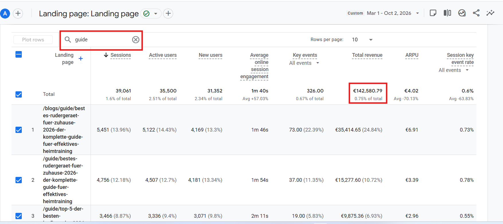
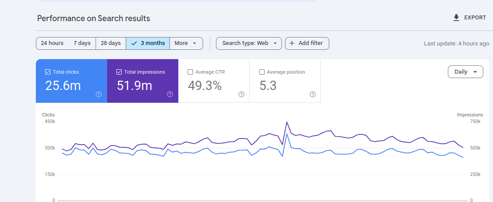

Case 10 / Sportstech
The Guide Engine: Programmatic SEO to Revenue
An AI-first programmatic system that shipped 34 guide articles and 32 Reddit posts in 4–6 months — and turned questions buyers actually ask into tracked revenue.
Where the revenue was hiding
Category pages win money keywords. But most buying journeys start earlier — in the questions people type before they know which product to trust: which treadmill for a small flat, rowing technique for beginners, how loud is a walking pad.
Those queries had no Sportstech answer. Not on Google, and crucially not inside AI assistants either — when a model recommended a home fitness brand, it recommended whoever had published the answer. Usually not us.
Build a guide engine that answers real buyer questions at programmatic scale, wired to the commercial pages — so authority and AI citations both flow toward revenue.
The programmatic system
Question mining at scale
Buyer questions harvested from search data, reviews, Reddit threads and AI answer gaps, clustered into topics the brand could own end to end.
AI-assisted production, human editorial layer
ChatGPT and n8n handled clustering, drafts and metadata; every guide passed a human review for accuracy, specificity and brand voice before shipping.
Template framework, not one-offs
Each guide shipped on a repeatable framework: direct answer up top, structured blocks for extraction, comparison tables and internal links into the matching category and product pages.
Reddit as the distribution layer
32 first-person posts on u/Sportstech_official, each linked to a guide and product page — feeding the exact source AI assistants quote when recommending products.
Measured as a revenue channel
Guide traffic tracked in GA4 to conversion, not just sessions. Revenue attribution ran from the first month, so the engine was judged on euros, not word count.
Results inside 4–6 months
The engine produced €142,580.79 in tracked GA4 revenue — roughly €1.5 crore — from guide pages built on the AI-first strategy alone.

At search scale, the programme contributed to 25.6M clicks across 51.9M impressions — visibility that compounds because every guide links into the commercial core.

The AI search proof
The deeper win is where buyers now meet the brand. In Semrush AI visibility tracking, Sportstech ranks #2 among German home fitness brands — ahead of Christopeit, Gorilla Sports, Fitshop, Skandika and Kettler.
- 858 mentions in AI answers — ChatGPT (309), Gemini (298), Google AI Mode (224) and AI Overviews (27).
- Cited as a source 411 times across 344 different Sportstech pages.
- Per-topic visibility: sWalk 96, sTread 96, F37 series 91, F10 90, Vibrationsplatten 87, Kraftstationen 85.
- Independent model test: 8 AI models, 36 real buyer questions — Sportstech appeared in top-2 picks 65% of the time on Gemini and 48% on Perplexity.
- Google DE #1 for "laufband", "laufband für zuhause" and "rudergerät" — 150K+ monthly searches combined.
Authority backs it up: Semrush Authority Score 44 ("very good"), 1.4K referring domains, 12.8K backlinks — with editorial outreach running daily.
Results
A content engine judged in euros — and quoted by the machines.
The takeaway
Programmatic does not mean low quality — it means the same high standard, repeated. Answer the questions buyers actually ask, feed the sources AI trusts, and measure the whole thing in revenue.